文献：lPérez P, Gangnet M, Blake A. Poisson image editing[M]//ACM SIGGRAPH 2003 Papers. 2003: 313-318.
框架分析
代码框架基于MATLAB，实现了GUI界面选取图像区域，我们需要实现的函数为
1 | function imret = blendImagePoisson(im1, im2, roi, targetPosition) |
我们先观察框架，函数的参数含义如下.
im1、im2.
系图像输入，为335x467x3数值矩阵格式. 分别为background 和 foreground.
roi.
观察该参数初始化语句
1
roi = hpolys(1).Position();
运行代码查看变量，如下图所示.
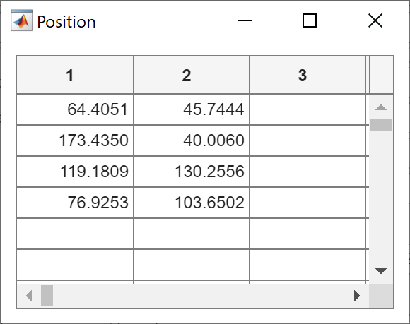
应为选取图像区域的多边形控制点坐标.
targetPosition.
观察参量初始化语句.
1
targetPosition = roi + ceil(hpolys(2).Position - roi);
感觉写法略显奇怪？其应为目标区域的顶点坐标. 这里的向下取整操作似乎是为方便后续操作，我们先不细究.
算法原理简述
如何实现自然的图像融合？我们试图将\(B\)融合到\(A\)，令生成图像为从\(\partial B\)上基于B的梯度“生长”出新的融合图像\(f\).
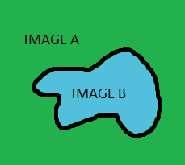
数学上来讲，边值条件为 \[ f_{(x, y)}=A_{(x, y)} \quad \forall(x, y) \in \partial \Omega. \] 此外，为了使生成图像\(f\)符合\(B\)的梯度信息，我们有 \[ \Delta f_{(x,y)} = div\ v_{(x,y)}\quad \forall (x,y)\in \Omega, \] 其中\(v_{(x,y)}\)是\(B\)的梯度函数. 上式是变分问题 \[ \min_{f}\iint_{B}|\nabla f_{(x,y)}-v_{(x,y)}|,\\ f_{(x, y)}=A_{(x, y)} \quad \forall(x, y) \in \partial \Omega. \] 的等价问题. 我们只需使用数值PDE方法求解即可. 其差分格式如下. \[ Nf(x, y)-\sum_{(d x, d y)+(x, y) \in\Omega} f(x+d x, y+d y)-\sum_{((d x, d y)+(x, y) \in \partial \Omega} A(x+d x, y+d y)\\=\sum_{(d x, d y)+(x, y) \in(\Omega \cup \partial \Omega)}(B(x+d x, y+d y)-B(x, y)) \] 这会产生典型的稀疏带状矩阵，我们有许多算法来求解.
算法实现
判断指定像素是否属于多边形范围
需要注意的是，代码框架中给出的两个图片大小并不一致.
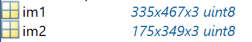
我们首先要搞清楚参数roi是如何定义的，查阅该函数索引.
1 | hp1 = drawpolygon(subplot(121)); |
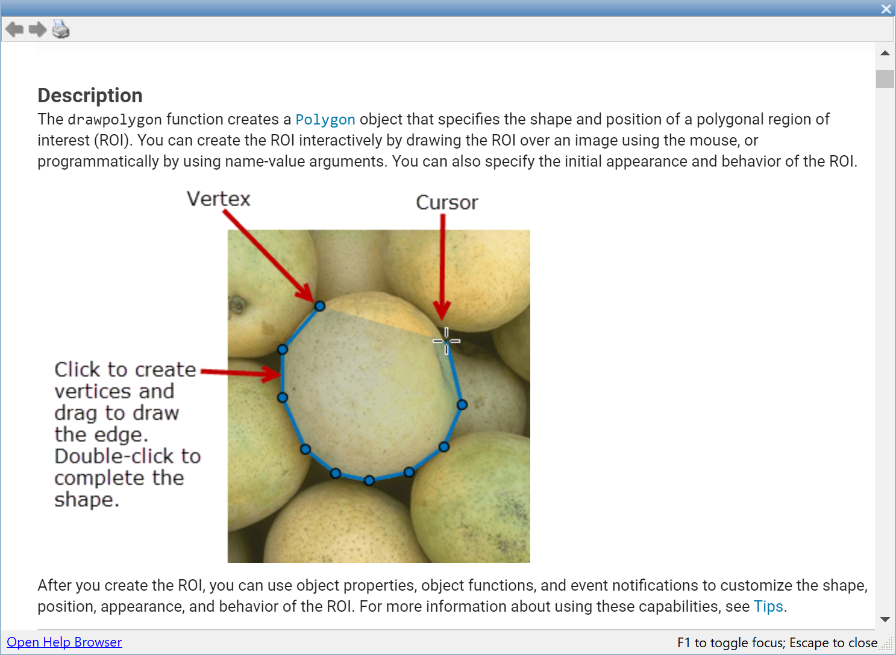
不太清晰，我们实验一下. 可以看到坐标是基于图像左上顶点定义的.
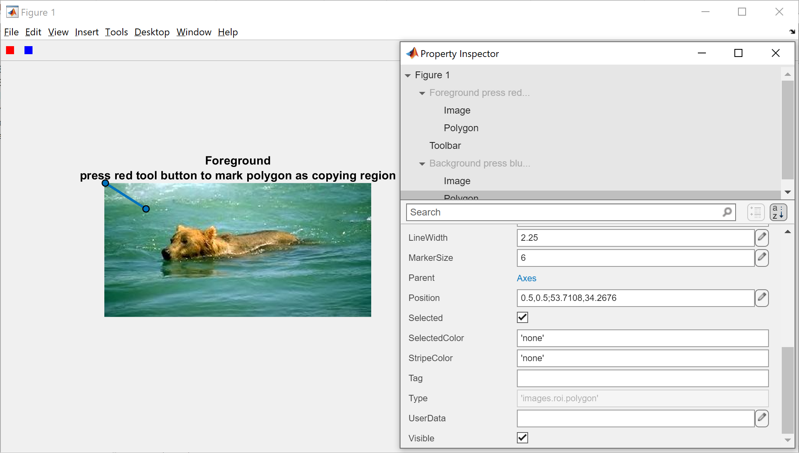
若顶点坐标为逆时针存储，我们可以使用叉乘判断. 实验发现，是按照输入顺序存储的. 因此无法确定为顺时针或逆时针序，需要我们做一定调整.
观察多边形产生的交互动画，可以看到是通过首个顶点与上个顶点与当前点做三角形实现扩充的. 这样输入的多边形并不保证为凸多边形，具有很强的灵活性.
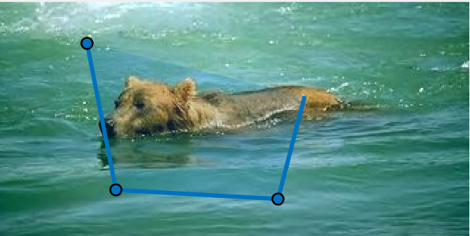
我们先实现一个判断点是否在三角形内部的函数.
调整三角形顶点为逆时针序
思路如图所示，注意向量叉乘\(p_1p_2\times p_1p_3\)若为正数，则说明两向量逆时针方向夹角小于\(\pi\). 即\(p_3\)位于\(p_1p_2\)的左侧，此时为逆时针方向.
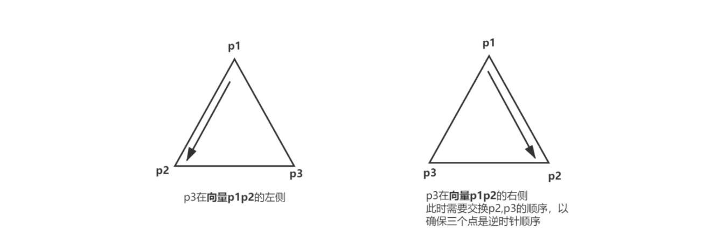
MATLAB内置cross()不支持二维向量叉乘，我们实现如下.
1 | function res = product(vertexes) |
而后调整顶点顺序.
1 | % 调整三角形顶点顺序为逆时针 |
求得三角形内部点集
实现判断单个点是否在三角形内部的函数如下.
1 | function res = insideTriangle(vertexes, point) |
求得控制多边形内部像素点
整体调试代码，发现问题. MATLAB中矩阵不能这样索引.
1 | matrix([i,j]) = 10; |
这并不意味着第 i 行第 j 列元素. 调试后程序结果依旧不对，判断三角形内部的代码有问题.
发现了问题，多边形绘制时是每两个顶点与首个顶点连线形成三角形绘制而成的. 在代码实现中变成了每三个相邻顶点连线的三角形.
1 | % step 01: get points inside polygon defined by vertexes. |
这样就得到了数据 data，它是一个包含选取多边形的矩形区域. 在多边形内的坐标点数据为图像值，不然为0.
代码重构
我们需要对每个图像的三个图层（RGB）以及两个图像的选中区域均实现前述算法，我们将其重构为函数实现复用.
1 | function data = insideHpolygon(roi,image) |
我们观察这样构建的图像，只有黑白. 这是因为我们的数值矩阵是double类型，matlab的图像格式中double需要处于0~1之间，超出均为白色.
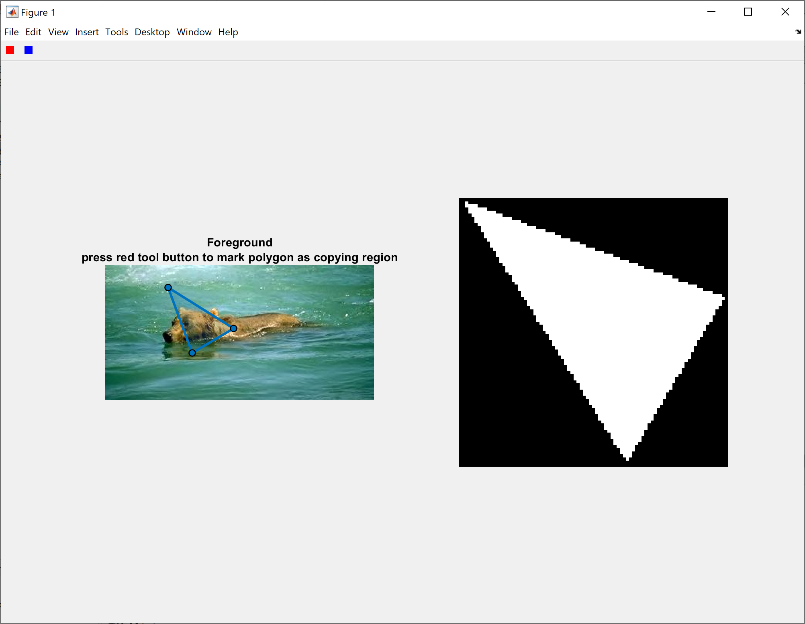
将其映射至给定区间即可.
1 | imshow(data/256) |
但是这是显示的结果并非我们选中部分.
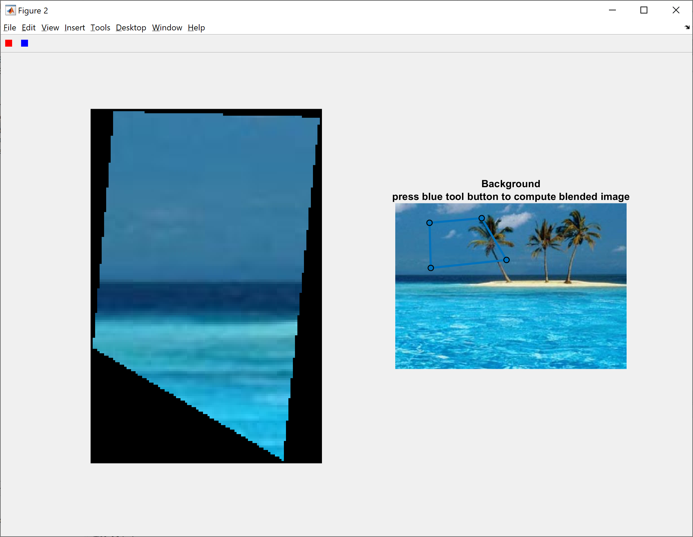
这是因为，roi的第一列为 x 轴坐标，对应矩阵应为列.
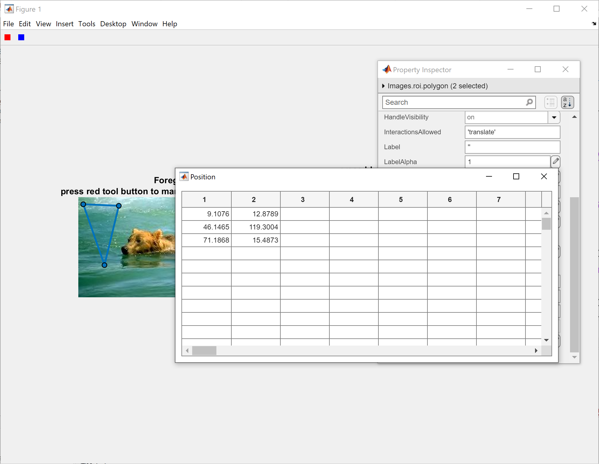
我们将 i ，j 对调. 效果依旧不对.
观察代码框架. 左图为 im2，右图为 im1.
1 | figure('Units', 'pixel', 'Position', [100,100,1000,700], 'toolbar', 'none'); |
多边形顶点信息 hp1 对应 im2，hp2对应 im1. 从而 roi 对应 im2，targetPosition 对应 im1.
1 | hp1 = drawpolygon(subplot(121)); |
因此应为
1 | data = insideHpolygon(roi,im2); |
效果如图. 简单的将 i，j 对调依旧存在问题，我们需要将 data 整个转置.
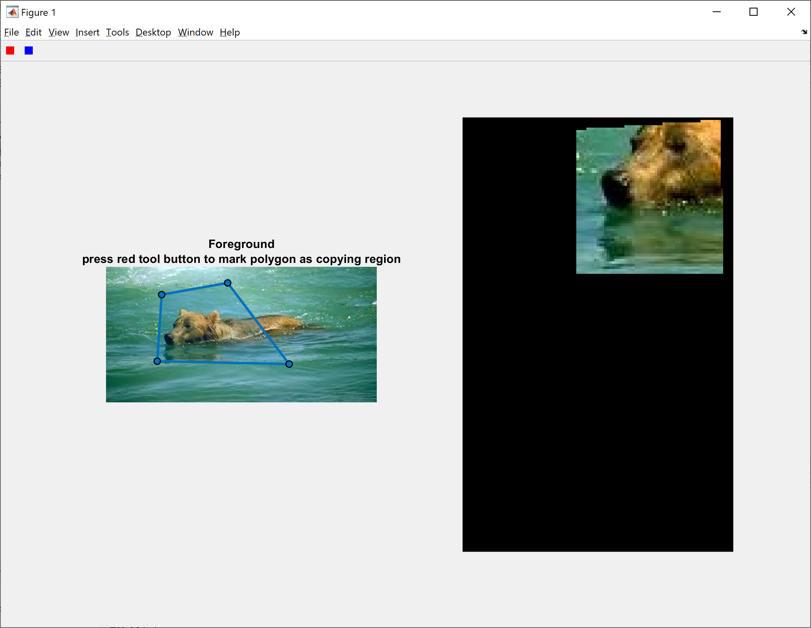
还是存在问题. 是否是因为我们设定的判断函数判断时所使用的坐标依旧是原坐标？
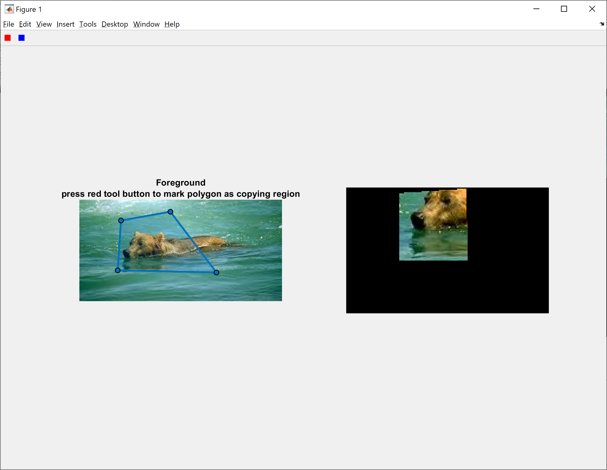
果然，我们直接对原有原点做对换后得到理想结果.
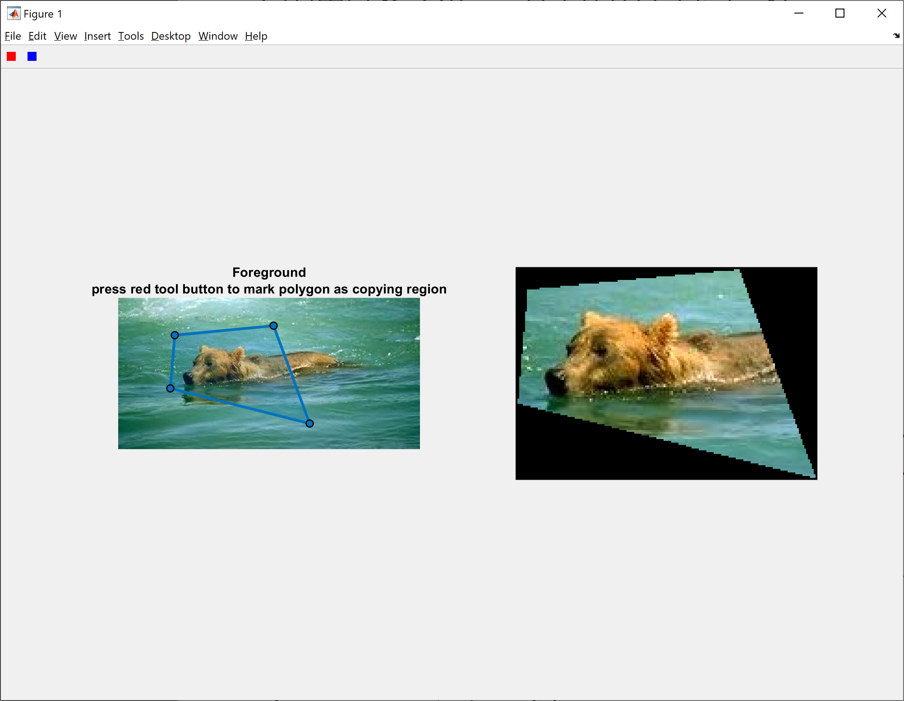
构造求解方程组
我们已知离散方程. \[ Nf(x, y)-\sum_{(d x, d y)+(x, y) \in\Omega} f(x+d x, y+d y)-\sum_{((d x, d y)+(x, y) \in \partial \Omega} A(x+d x, y+d y)\\=\sum_{(d x, d y)+(x, y) \in(\Omega \cup \partial \Omega)}(B(x+d x, y+d y)-B(x, y)) \] 注意到图像本身存在一些黑色点. 为了避免不在范围内（0）与像素色为0 混淆，我们设置不在范围内像素值为256*2.
构造系数矩阵，我们首先需要知道多边形内部的像素的个数. 我们可以对前述代码稍作修改得到.
对于某一像素点，我们需要知道
- 其本身以及临近像素点的序号.
- 其本身是否为节点. 以及临近像素点是否在范围内，是否为界点. 在范围内的个数.
数据准备
我们首先对变量计数，得到 serial. 其保留各个像素间的位置关系.
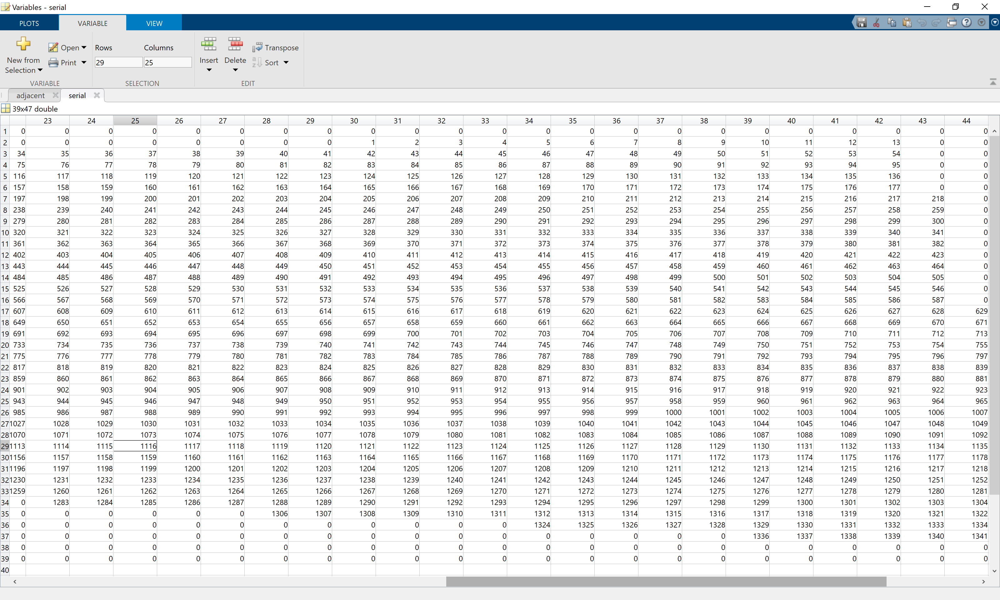
而后将每个像素临近节点序号、临近节点个数存储在 adjacent . 其中首列为临近节点个数，此后四列为临近节点序列. 若存在0，则为界点.
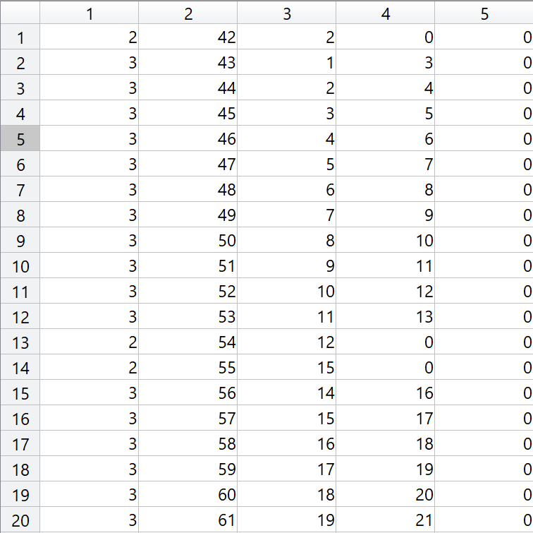
方程组构造求解
我们需要找到一个给定点临近像素中界点的值，这可以利用存储在 adjacent 中的数据.
我们使用Cholesky 分解解方程组， 求解后将结果一一对应到图像上.
求解结果如下，存在问题.
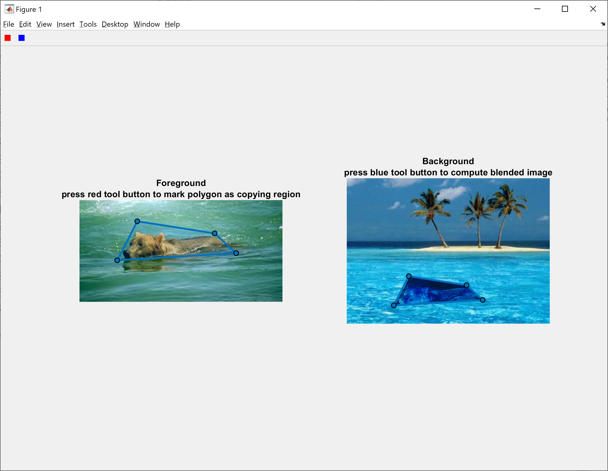
检查方程组，问题过多不便分析效果. 一并列举如下.
文献中界点并不属于选定范围，只要是选定范围内点均为内点.
The boundary of Ω is now \(\partial \Omega=\left\{p \in S \backslash \Omega: N_p \cap \Omega \neq \emptyset\right\}\).
我们调整 adjacent ，在其后附上四列以存储临近界点的坐标.
检查Rhs发现A、B中根本没有储存像素值，需要重新构造右端项.
发现方程组中\(|N_p|\) 的理解有偏差. 不是范围内点，而是图片内的点.
When Ω contains pixels on the border of S, which happens for instance when \(\Omega\) extends to the edge of the pixel grid, these pixels have a truncated neighborhood such that \(|N_p|<4\).
像素值数据类型为uint8，最大存储到256. 数据溢出给右端项带来麻烦.
1
2
3img = imread('./1.jpg'); % 读入是unit8型(0~255)数据
I1 = im2double(img); % 把图像转换成double精度类型（0~1）
I2 = double(img)/255; % uint8转换成double,作用同im2double
以上问题解决后，效果依旧不理想. 原图的色彩信息完全丢失了.
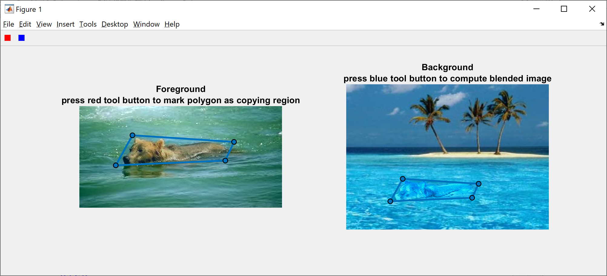
发先了问题，右端项的正负号反了. ctralie 的教程中此处刚好写反了，注意到后与文献核对，果然如此.
效果展示
历时两天半，效果如图.
我们再做尝试.
结果如下. 还是有比较明显的边界感，毕竟是二十年前的算法了.